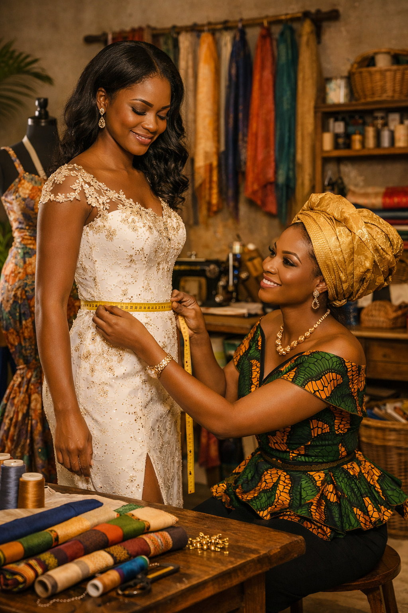
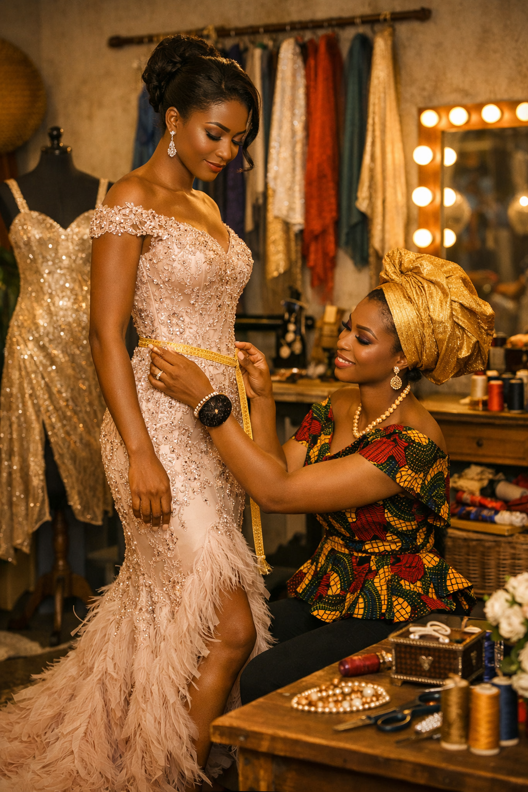
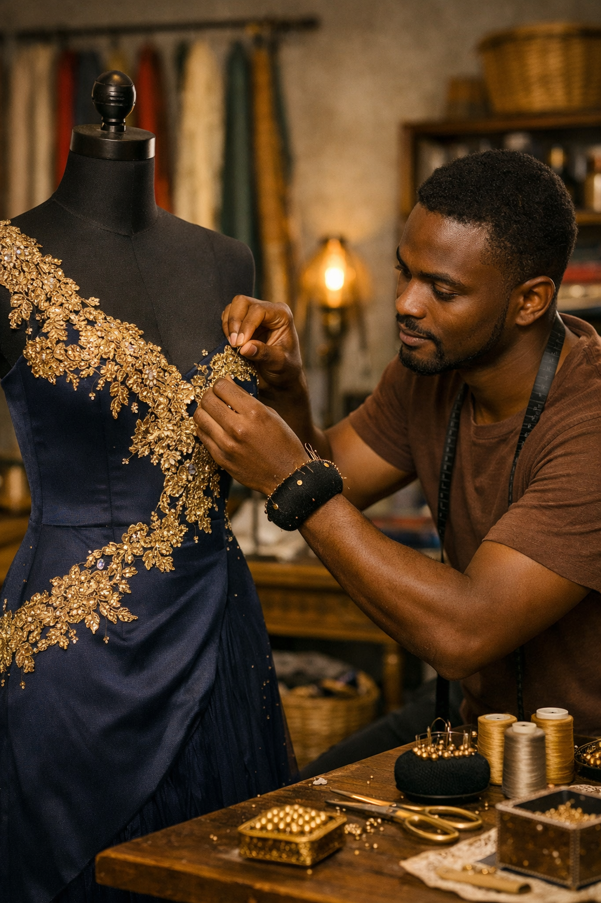
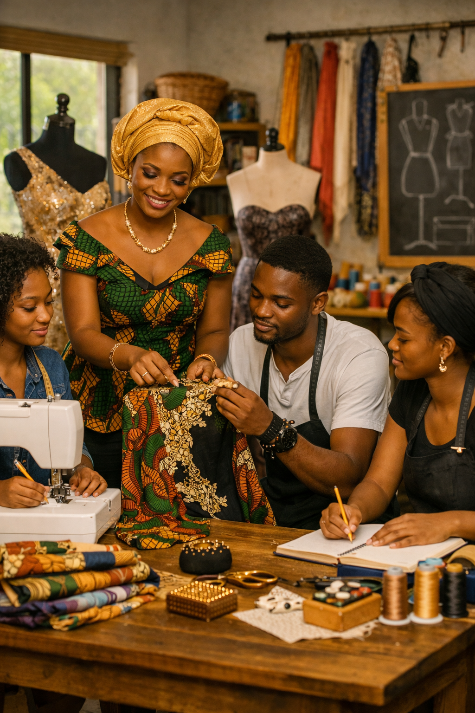
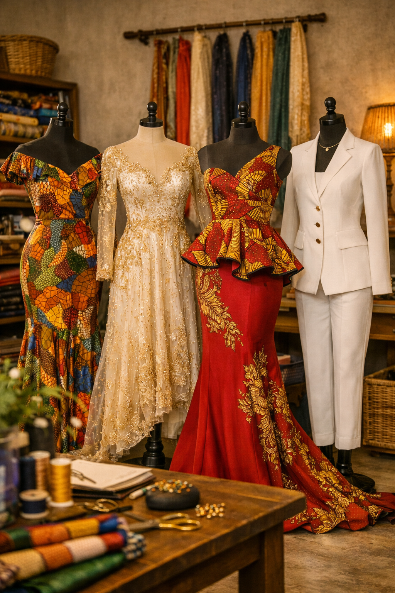
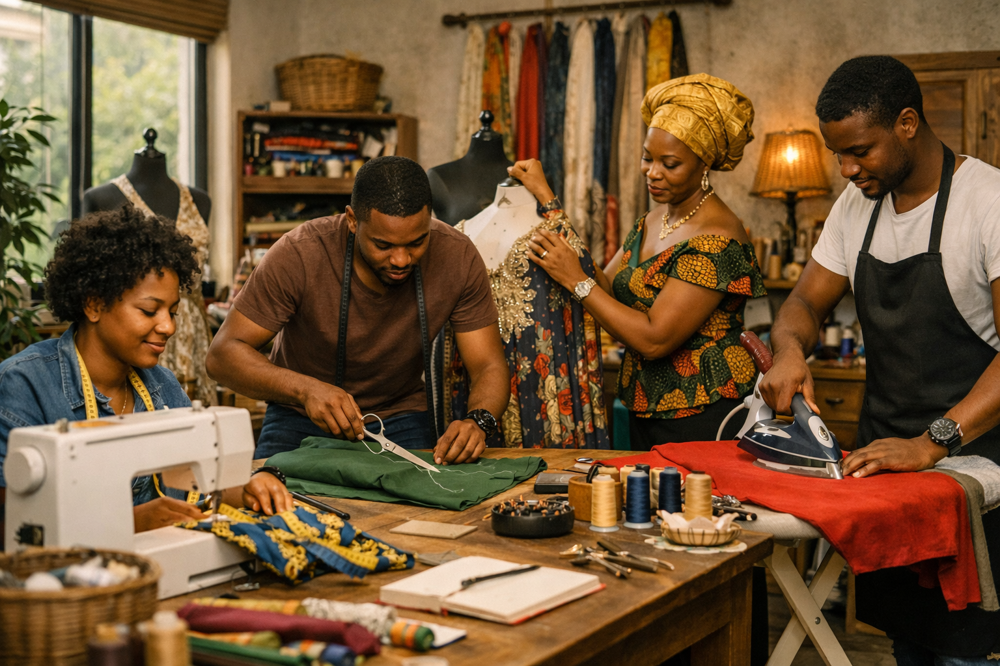
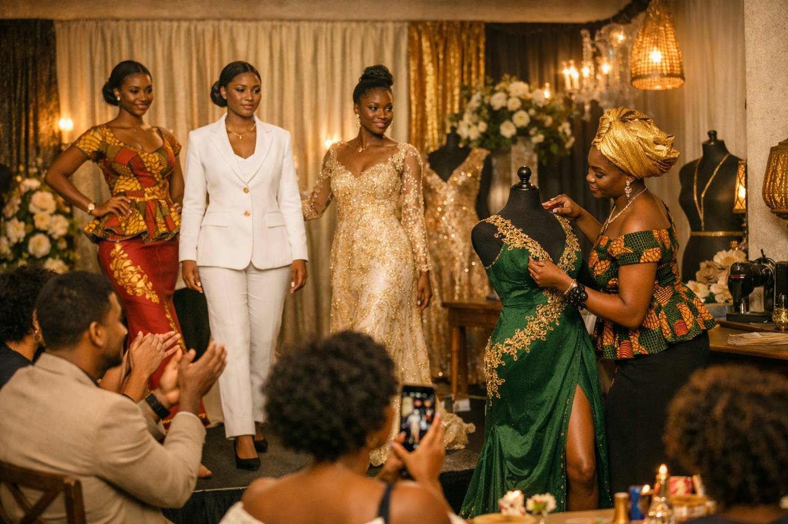
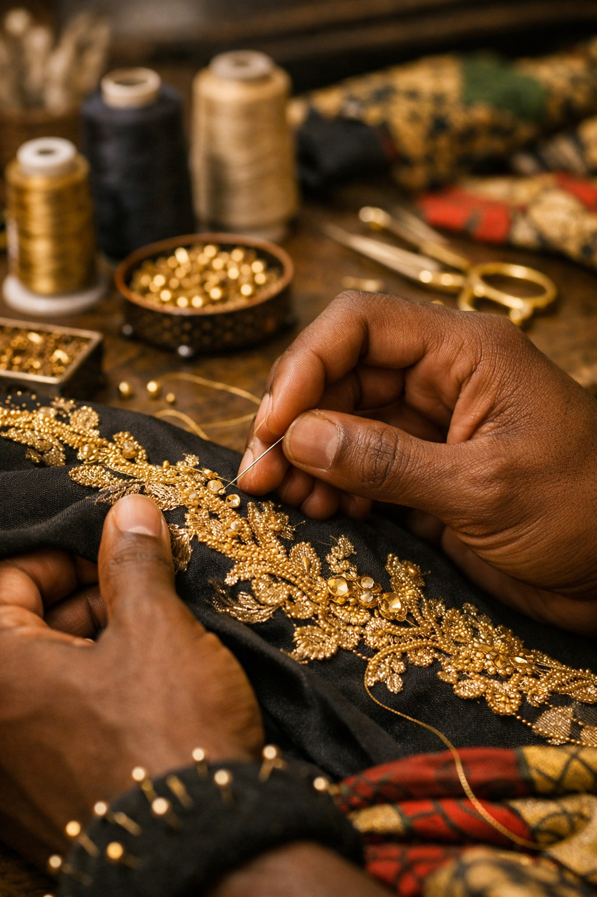

🧵 Création sur‑mesure
Conception de tenues uniques adaptées à la morphologie et au style de chaque client. Chaque pièce est pensée pour refléter l’élégance et la personnalité de celui ou celle qui la porte.
Elisabeth Couture est une maison béninoise de stylisme qui célèbre l’élégance africaine à travers des créations sur‑mesure. Chaque pièce est conçue avec passion, mêlant tradition et modernité, pour sublimer la beauté et la confiance de chaque femme. Notre atelier incarne le savoir‑faire local, la créativité et le raffinement qui font la richesse du patrimoine béninois.

Conception de tenues uniques adaptées à la morphologie et au style de chaque client. Chaque pièce est pensée pour refléter l’élégance et la personnalité de celui ou celle qui la porte.

Réalisation de vêtements pour mariages, cérémonies et défilés. Des créations raffinées qui allient tradition africaine et modernité.

Ajustement, transformation et embellissement de vos tenues existantes pour leur donner une nouvelle vie. Finitions impeccables et souci du détail garantis.

Encadrement des jeunes passionnés souhaitant apprendre les techniques de couture professionnelle. Un savoir‑faire transmis avec rigueur et passion.




"J’ai confié la confection de ma robe de cérémonie à Elisabeth Couture : le résultat était sublime !"
"Service professionnel et accueil chaleureux. Ma tenue sur mesure était parfaite du premier coup."
"J’ai adoré le soin apporté aux détails et la qualité des tissus. Je recommande vivement !"
"Une équipe à l’écoute et un travail impeccable. Ma robe de mariée était un rêve devenu réalité."